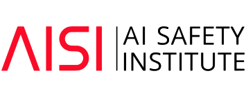
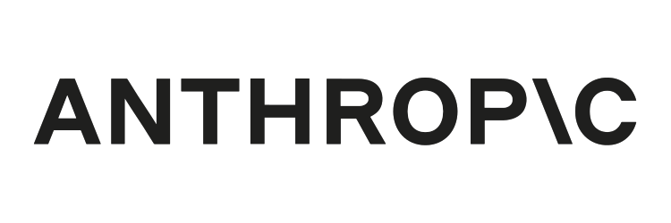
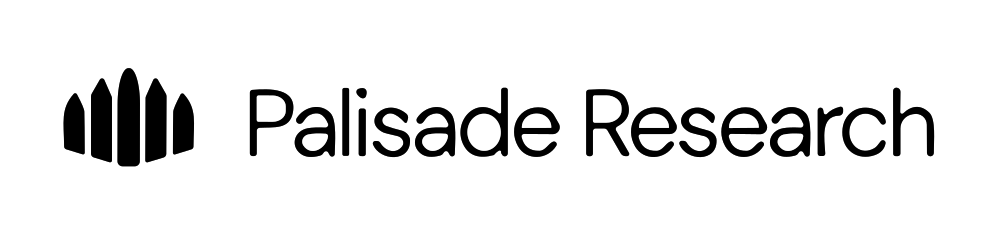
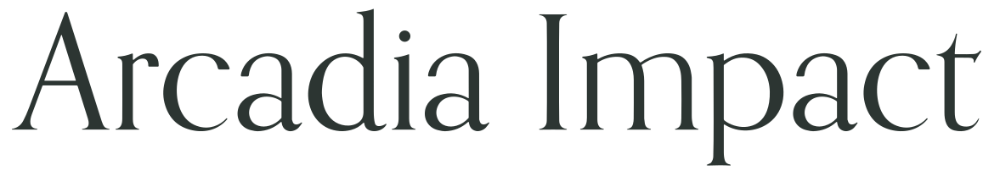
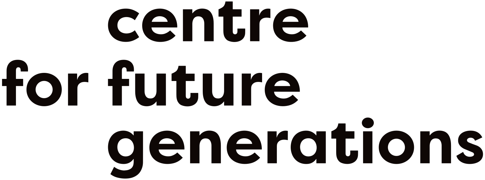
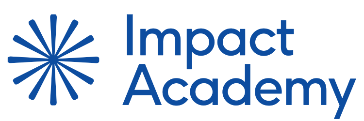
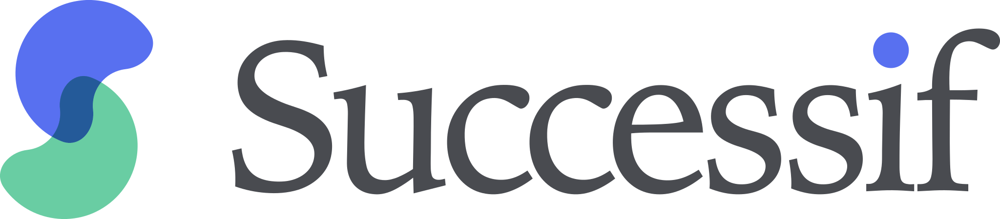
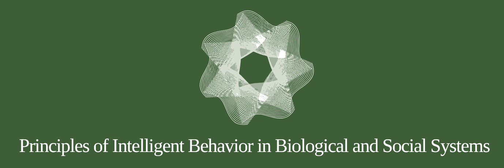
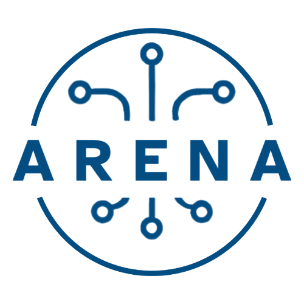

Technical AI Safety
Research talks and panels on interpretability, evaluations, scalable oversight, and deceptive model behavior, including an evaluations panel with Apollo Research, Arcadia Impact, Palisade Research, and UK AISI.
The first Zurich AI Safety Day brought together researchers, engineers, policymakers, and newcomers from across Europe for a full day of talks, workshops, and high-density networking.
The day featured keynotes, panels, workshops, and lightning talks from speakers at organizations including Anthropic, Apollo Research, UK AISI, FAR.AI, the Future of Life Institute, the ETH AI Center, ERA, Successif, HIP, and Palisade Research, organized around three tracks. A two-hour organization fair and structured networking rounded out the program.
Research talks and panels on interpretability, evaluations, scalable oversight, and deceptive model behavior, including an evaluations panel with Apollo Research, Arcadia Impact, Palisade Research, and UK AISI.
Sessions on the policy landscape, from EU policymaking experience to technical roadmaps for effective AI governance.
Career-transition guidance, personalized advising roundtables, and pathways into AI safety for professionals and newcomers alike.















Jinesis Lab
Hosted by


The second edition takes place on 7–8 November 2026 at ETH Zurich, expanding to two full days.